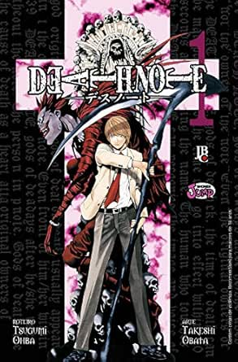

sinopse
Não há nada de interessante no mundo da Morte. Ryuk, o Deus da Morte, deixou cair deliberadamente seu Death Note na terra. Este caderno tem um poder terrível: quem escrever o seu nome morrerá! O Death Note finalmente caiu nas mãos de Light Yagami. Aluno exemplar, mas entediado, após descobrir o poder maligno do caderno preto, decide se tornar um vigilante e eliminar o crime da face da terra. As mortes contínuas de criminosos em vários países finalmente atraíram a atenção da Interpol, que recorreu ao maior detetive “L” do mundo em busca de ajuda para resolver o caso. Um jogo frenético de gato e rato acontece entre Light e seus implacáveis perseguidores, enquanto Ryuk aproveita os eventos que surgem do uso do Death Note.
Informações
- Autor: Tsugumi Ohba e Takeshi Obata
- Volumes: 07 Volumes(edição especial) + Death Note - Justice or Evil (One Shot)
- Status: Completo
- Gêneros: Drama, Mistério, Psicológico, Shounen, Tragédia